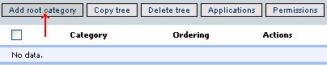
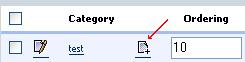
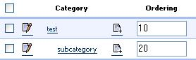

Once you click to admin link then you will be redirected to your course list page, where if you are dotlrn-catalog admin or site-wide-admin then the link Manage Category Tree will appear:

Once you click un the link you will redirect to a page were you can add/remove categories and subcategories to the already created tree (dotlrn_catalog_tree).


